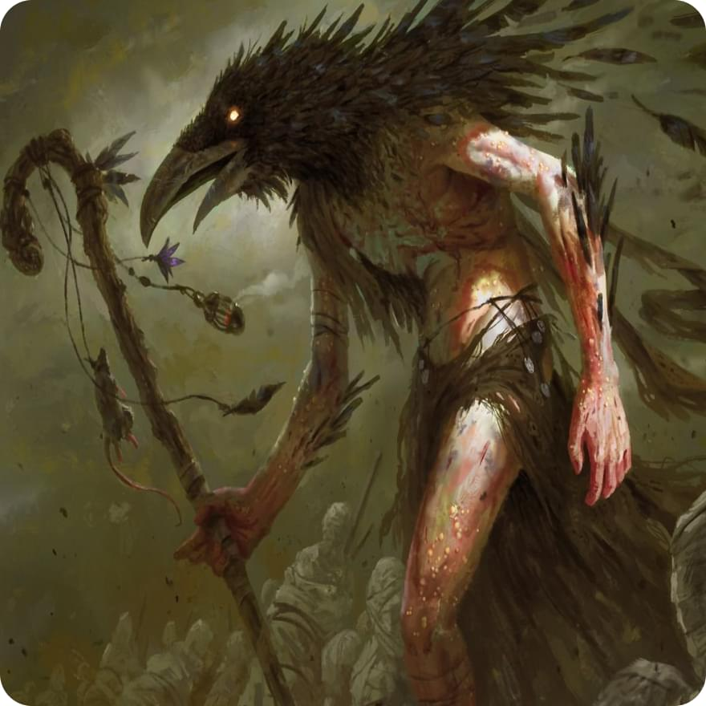

Имя: Асхат

Характеристики:
Сила -1
Ловкость 0
Телосложение 0
Интеллект +3
Мудрость +1
Харизма -1
Акробатика -2
Атлетика -2
Внимательность +1
Выживыние 0
Выступление -1
Запугивание 0
История +1
Ловкость рук 0
Магия +2
Медицина +1
Обман -1
Природа +4
Проницательность +1
Религия +1
Скрытность 0
Убеждение -1
Уход за животными +2
Анализ +1
Характер:
- Самоконтроль: Вы обладаете способностью контролировать свои эмоции и держать себя на поводке. Это помогает Вам принимать рациональные решения даже в самых сложных ситуациях.
- Замкнутость: Вы предпочитаете сохранять свои мысли и эмоции в себе, не раскрывая их окружающим. Ваша молчаливость создает загадку вокруг Вас и заставляет других людей проявлять больше интереса к Вашей личности.
- Решительность: Когда Вы принимаете решение, Вы полностью его осуществляете. Ничто не может отвлечь Вас от цели, и Вы готовы пойти на любые жертвы, чтобы достичь успеха.
Корвус - маг роста
Корвусы - это раса ворон-человеков, и их внешность необычна и отличается от других рас.
Корвусы обладают человеческой основой, но их черты и детали напоминают ворона. У них темные волосы, часто черные или темно-синие, которые могут быть густыми и глянцевыми, словно перья. Их волосы часто организованы в прическу, напоминающую форму крыла или хохолка ворона.
Лицо корвусов имеет резкие и выразительные черты, напоминающие клюв ворона. У них узкие и проницательные глаза, окрашенные в темные оттенки, иногда с нотками голубого или зеленого. Взгляд корвусов обычно глубок и загадочен, отражая их ум и обостренное восприятие.
Кожа корвусов имеет бледный или светло-серый оттенок, с некоторыми переходами к темному синему или фиолетовому. Она обычно гладкая и безупречная, словно перья ворона.
Также важным элементом внешности корвусов являются перья, которые покрывают их тела. Перья обычно присутствуют на спинах, плечах, руках и ногах, создавая изящные контуры и придавая им грациозность. Они могут быть густыми и пушистыми, их цвет может варьироваться от черного до глубоких оттенков синего и фиолетового.
Внешность корвусов притягивает внимание своей загадочностью, интригующей комбинацией человеческих и вороновых черт. Она отражает их интеллект и связь с миром ворон, придавая им неповторимый и запоминающийся облик.
История:
В глубинах горных вершин и мрачных лесов, между туманными долинами, пробудилась раса Корвусов. Большинство из них обладало остроумием и высокоразвитым интеллектом, делая их настоящими стратегами и мастерами мудрости.
Однако их дары не ограничивались только умом. Корвусы отличались великолепным пониманием и владением магией. Они воплощали в себе энергию источников, способные вызывать мощные заклинания и манипулировать элементами природы.
Слава Корвусов распространилась далеко за пределы их родной земли. Они были известны своим мастерством в добыче золота. Их острый глаз и тонкая чуткость помогали им обнаруживать самые малейшие следы драгоценного металла, который они с умением извлекали из недр земли.
Однако недавно Корвусам выпало столкнуться с новым испытанием. Война была объявлена каджитам, другой расе, с которой Корвусы ранее поддерживали мирные отношения. Это вызвало раздор и борьбу между двумя расами, превращая их прежнюю дружбу в ожесточенное противостояние.
Теперь Корвусам предстоит использовать свой ум, магические способности и навыки добычи золота, чтобы защитить свою расу и выстоять в этой новой суровой реальности. Что ждет их в этом конфликте и как они справятся с ним – только время покажет.
Моя личная цель:
Ваша основная задача как можно скорей сбежать из этого места к лучшей жизни
Отношения:
У тебя 2 друга корвуса из твоей группы
Инвентарь:
Амулет с символами роста, пучок сухих трав и корней, зелье лечения (кость хитов * 1), свиток с запечатанным заклинанием(нужна сильная магия чтобы открыть), чаша, зелье спокойного сна
Способности:
Очки природы
Вы способны накапливать до трех очков роста и использовать за их счет способности
Старое должно умереть, чтобы новое смогло возрости
После смерти живого существа, вы способны восполнить одно очко роста потратив ход, спустя один ход действие выполнить будет невозможно, по окончанию битвы в случае присуствия трупов живых персонажей с жизненной энергией, вы восолняете одно очко, максимальное колличество очков роста - 3
Исцеляющий прикосновение
Потратив очко роста, вы способны излечить существо на 1к6
Поглощение жизни
Вы способны мгновенно убить маленькое существо
Опутывание
Вы способны опутать корнями противника, полностью обездвижив его на 1 ход, потратив одно очко роста
Форма ворона
Вы способны превратиться в ворона, потратив 1 очко роста
Ядовитая лоза
Потратив одно очко роста, вы способны опутать врага ядовитой лозой, в следствии чего он получит урон 2к6 и 1к4 + 3 урон ядом
Землетрясение
Потратив 3 очка роста, вы способны создать землетрясение в небольшом радиусе (круг), в следвии чего все персонажи находящиеся в данной области получат урон 3к6, а местность станет труднопроходимой
Инициатива
0
Кость хитов
1к8
Экипировка:
Оружие (посохи, волшебные палочки):
Посох роста
(1к4) + 1
Меткость: +3
Доспехи (тканные):
Набедренная повязка
+1 к защите
сандали
+1 к защите
Жизни:
12
Класс брони:
12
Языки:
Общий, Каджитский, Корвусовский